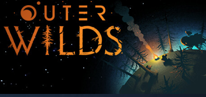
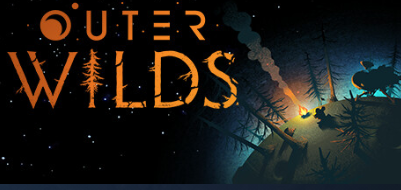
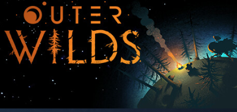

There is also a legislative regulation in place that blocks games or media from coming into the Great Fire Wall of China. A censorship system is in place so that for games to be published in China, foreign or local publisher will have to file a profile to the government agency with constantly shifting criteria due to domestic circumstances. A particular game or film could take up to 10 years to pass the bar and be available to public, given that if they can pass at all with the ever changing rules.
It is so to say, without some “illegal borrowing”, players in China could not get access to the most up-to-date games.
The situation went better when online platforms like Epic Games, Steam, Origin, or Ubisoft entered China a few years ago, they brought some power balance into China. The platforms were International Megacrops who were powerful enough to be considered gray areas which were publishing games, bypassing the censorship system.
However, by 2020, the government strengthened their grasp and finally pressured the corps to develop a special “Chinese-edition” for China-region IP users which omitted 40% of the game from the official branch.
